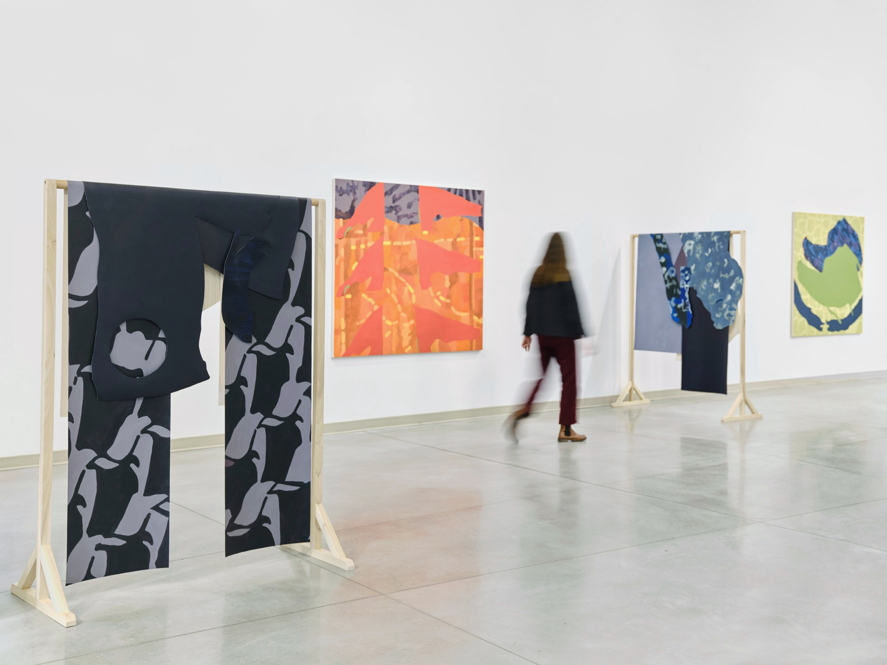
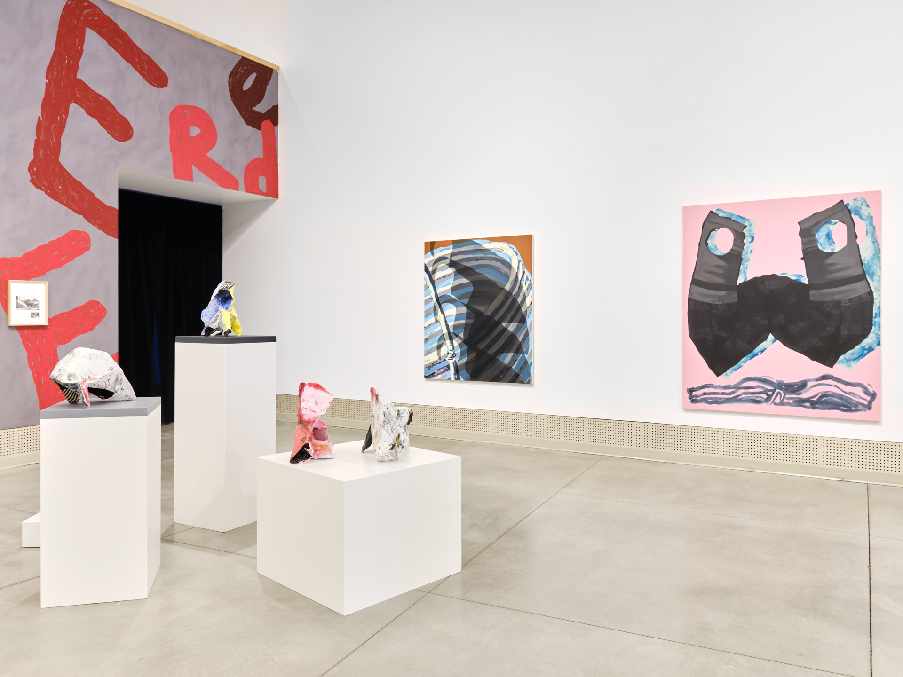
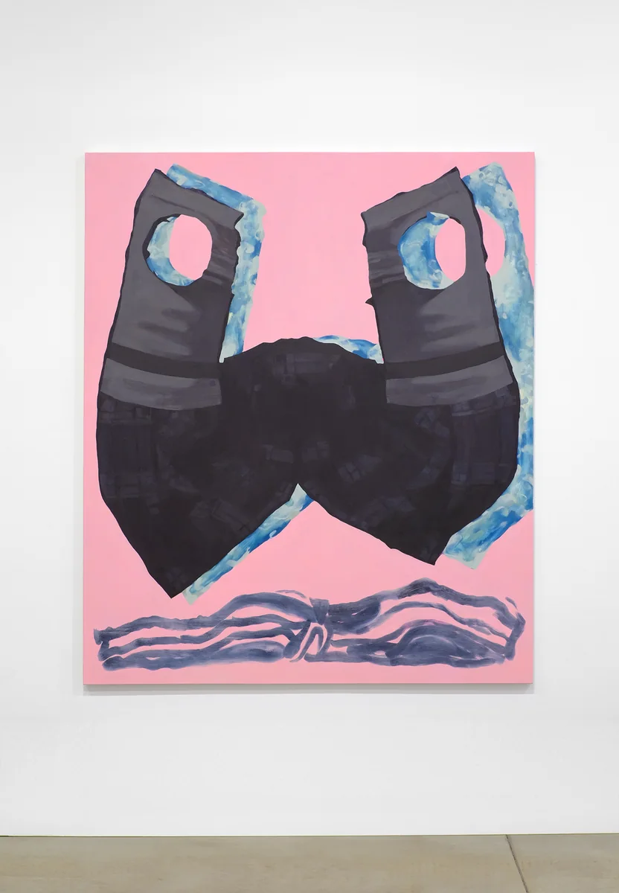
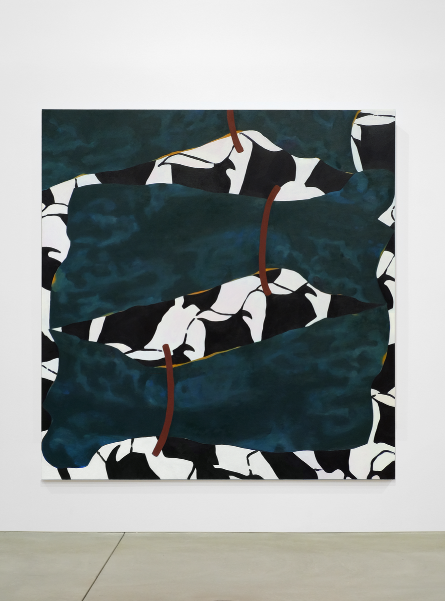
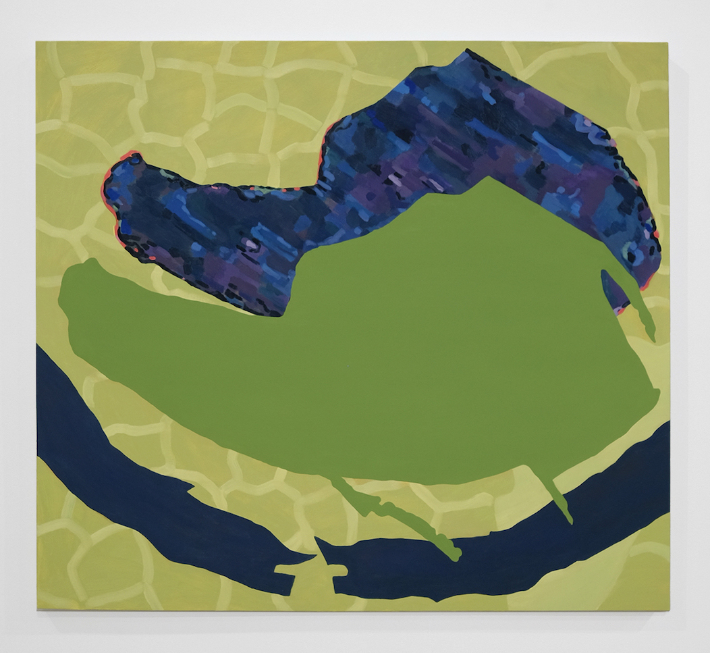
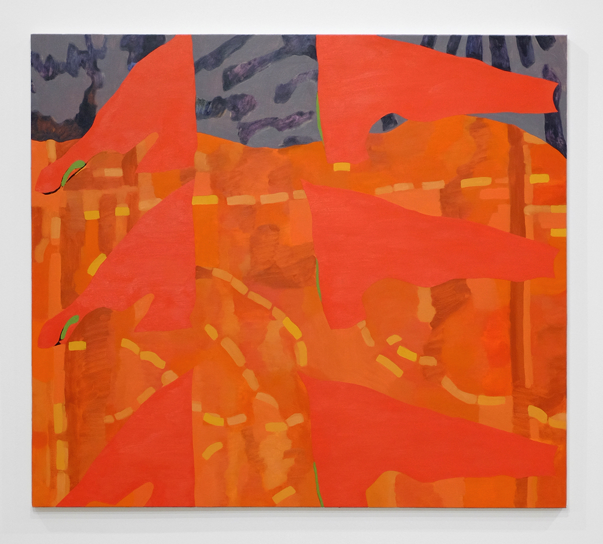
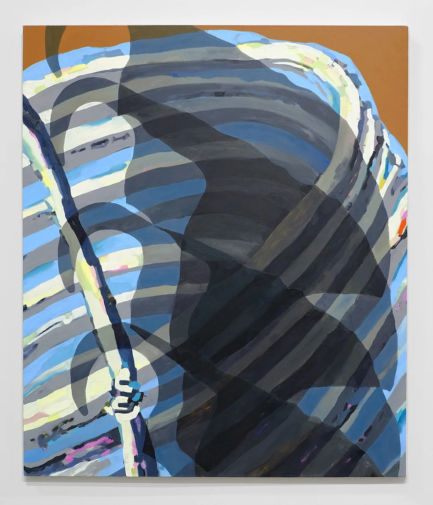
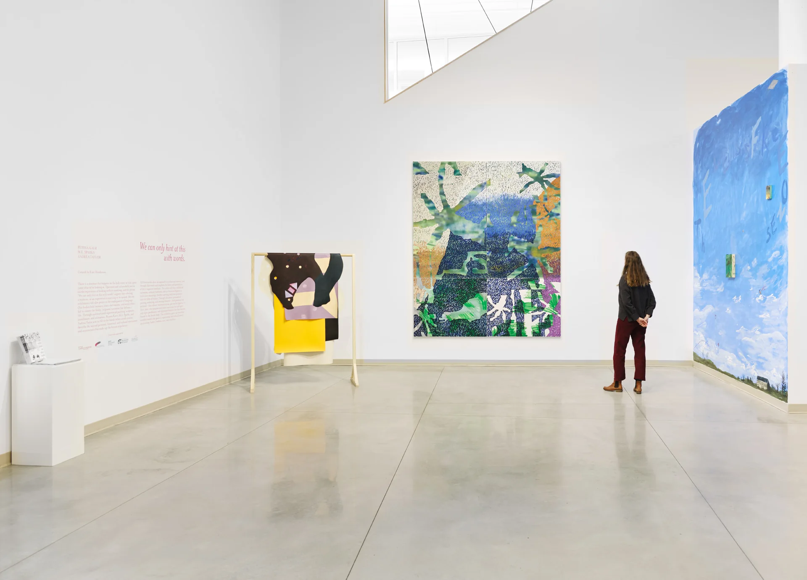
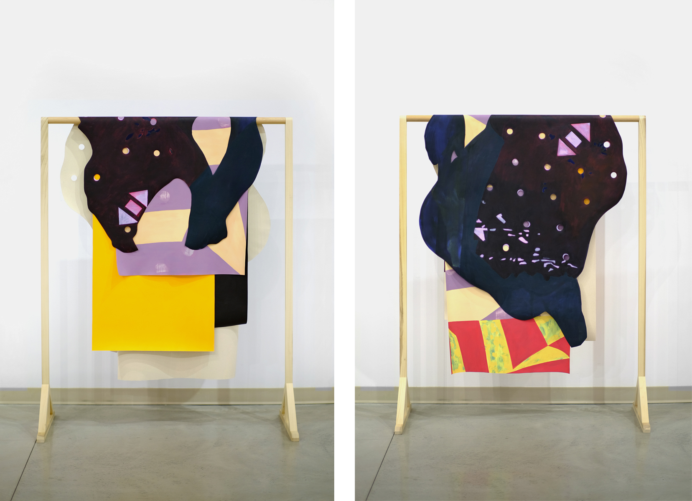
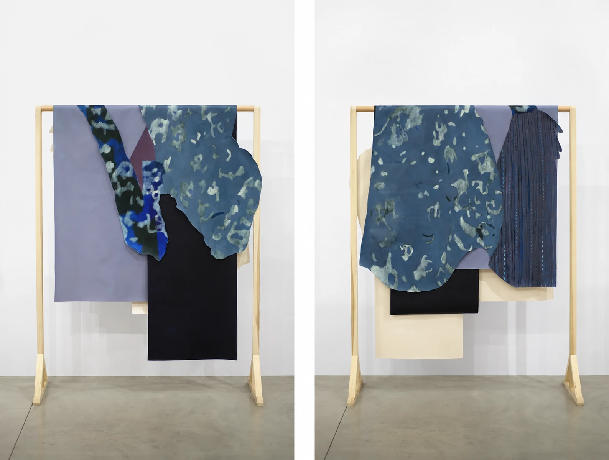

We can only hint at this with words, Gordon Smith Gallery of Canadian Art, 2022
Left: Cowgirl, 2022, oil on cut canvas, 68” x 49”

We can only hint at this with words, Gordon Smith Gallery of Canadian Art, 2022

Mirror Mirror, 2022, oil on canvas, 72” x 60”

Snaked, 2022, oil on canvas, 70” x 67”

Cradle, 2022, oil on canvas, 62” x 66”

Red Flag, 2022, oil on canvas 60” x 68”

Hook and Loop, 2022, oil on canvas, 60” x 52”

We can only hint at this with words, Gordon Smith Gallery of Canadian Art, 2022

Polka, 2022, oil on cut canvas, dimensions variable

Silverfish, 2022, oil on cut canvas, dimensions variable